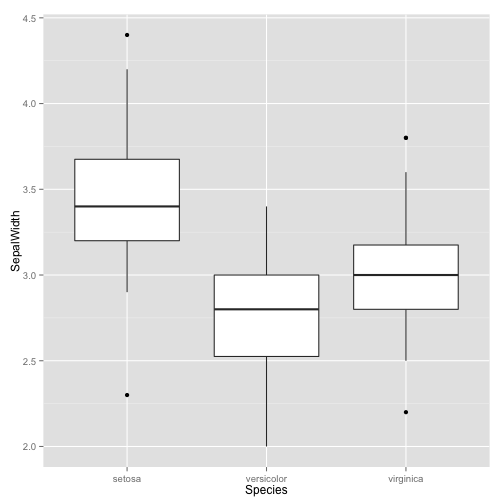

Recently, I have moved away from text files as data storage, and started using MongoDB. While there are already two R packages (RMongo and rmongodb) interfacing with MongoDB, I was never completed satified with them - especially in comparison to the excellent PyMongo. A couple of days ago, a new package, mongolite, was released and seems very promising.
Here, I quickly want to showcase some of the functions of mongolite, using Fisher's Iris data set.
data(iris)
# remove . to avoid problems with MongoDBs naming structure
names(iris)[1:4] = gsub("[.]","",names(iris)[1:4] )
head(iris)
## SepalLength SepalWidth PetalLength PetalWidth Species
## 1 5.1 3.5 1.4 0.2 setosa
## 2 4.9 3.0 1.4 0.2 setosa
## 3 4.7 3.2 1.3 0.2 setosa
## 4 4.6 3.1 1.5 0.2 setosa
## 5 5.0 3.6 1.4 0.2 setosa
## 6 5.4 3.9 1.7 0.4 setosa
First, we need to insert the data from R into a new collection in MongoDB. This is done by first establishing a connection to the collection in the database, and then calling the insert function on the connection handler.
library(mongolite)
c = mongo(collection = "iris", db = "tutorials")
c$insert(iris)
##
Complete! Processed total of 150 rows.
## [1] TRUE
We get some nice feedback from the function, showing us that we inserted 150 rows (which is the total number of rows in the Iris data set). Let's start exploring the data with mongolite. You can easily get the total number of rows, as well as the unique values within the Species column/field:
c$count()
## [1] 150
c$distinct("Species")
## [1] "setosa" "versicolor" "virginica"
It's also possible to utilize MongoDB's aggregate function through $aggregate:
c$aggregate('[{"$group": {
"_id":"$Species",
"count": {"$sum":1},
"avgPetalLength":{"$avg":"$PetalLength"}
}}]')
##
Found 3 records...
Imported 3 records. Simplifying into dataframe...
## _id count avgPetalLength
## 1 virginica 50 5.552
## 2 versicolor 50 4.260
## 3 setosa 50 1.462
Of course, with a small data set such as the Iris data, there is no drawback in simply doing the aggregating in dplyr, but if you are dealing with a big data set, querying the MongoDB database directly might give you some performance benefits, as not all the data has to be loaded into memory.
iris %>%
group_by(Species) %>%
summarise(count = n(), avg = mean(PetalLength))
## Source: local data frame [3 x 3]
##
## Species count avg
## (fctr) (int) (dbl)
## 1 setosa 50 1.462
## 2 versicolor 50 4.260
## 3 virginica 50 5.552
Similary, let's suppose we don't need all columns/fields for an analysis. For example, maybe we're only interesting in the sepal width for one particular analysis. Instead of loading all the data into memory, we can use mongolite to only return chosen fields:
sw = c$find('{}', '{"SepalWidth": 1, "Species": 1, "_id": 0}')
##
Found 150 records...
Imported 150 records. Simplifying into dataframe...
ggplot(sw, aes(x = Species, y = SepalWidth)) +
geom_boxplot()

Of course, you can also update and remove entries in your database, as well as other functions. If you'd like to know more, have a look at the package on github and CRAN.